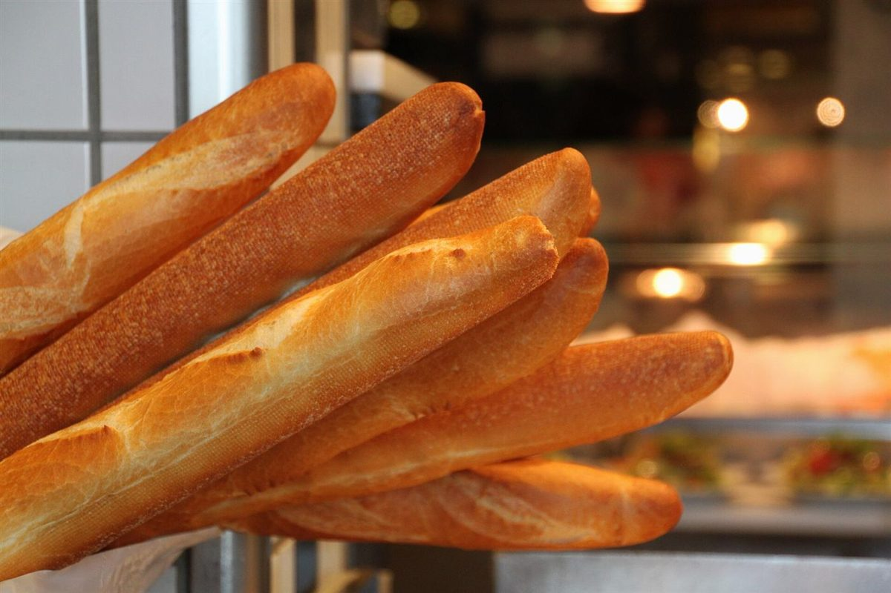
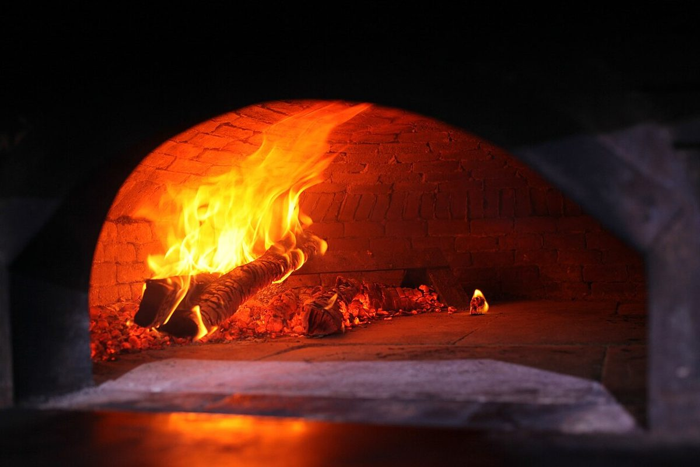

制作側の連想
対局時計の部位を、配置図にしてみる
このサイトは、盤の横に置く二つの盤面のある時計を図にしたつもりで作りました。六つの部位に番号をふり、上の図と並べています。制作側の連想で、お店の理念・由来とは無関係です。実際の対局時計の仕様を示すものでもありません。
凡例
六つの部位
- 1押しボタン本体の上に左右ひとつずつ並ぶ、手前に倒して押すための板。
- 2文字盤本体の正面に二つ並ぶ、丸い盤面。
- 3針それぞれの盤面の中心から伸びる、細い針。
- 4旗盤面の上のほうに付ける、小さな目印の札。
- 5ゼンマイ巻き本体の中央に付ける、巻き上げるための小さなつまみ。
- 6本体ケース二つの盤面と押しボタンをまとめて収める、四角い箱。
ギャラリー(イメージ)
パンとコーヒー豆の写真





写真はパンとコーヒー豆などのイメージです。お店のものではなく、お店で提供している商品を示すものでもありません。
ご案内
お店のこと(確認できたものだけ)
| 所在地 | 〒520-0862 滋賀県大津市平津1丁目2-11 |
|---|---|
| 電話 | 準備中 |
| 営業時間 | 準備中 |
| 定休日 | 準備中 |
| ご予約 | 準備中 |
| 駐車場 | 準備中 |
| SNS | Instagram @pain_prunelle |